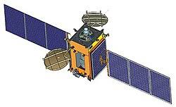
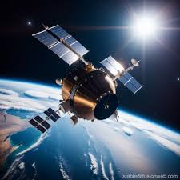

**WELCOME TO**
*INFORMATION*
India's Contribution to Satellite Technology:-
India has made significant strides in satellite technology through
projects like
GSAT (Geosynchronous Satellite) and NAVIC (Navigation with Indian
Constellation).
These projects have not only enhanced India's capabilities in space
but also provided
valuable services in weather prediction, navigation, and disaster
management.
GSAT Satellites
GSAT satellites are communication satellites launched by the Indian
Space Research Organization (ISRO).
While their primary purpose is communication, some GSAT satellites
also carry meteorological
payloads to collect weather data. This data is crucial for:-
1.Weather Prediction: Monitoring cloud cover, precipitation,
and
temperature variations helps
meteorologists predict weather patterns and issue timely warnings
for severe weather events.
2.Disaster Management: Tracking storms and cyclones provides
early
warnings and aids in disaster
preparedness and response.
NAVIC (Indian Regional Navigation Satellite System)
NAVIC, also known as IRNSS (Indian Regional Navigation Satellite
System), is India's regional
satellite navigation system. It provides accurate positioning and
timing services across India and the surrounding region. NAVIC helps
with:-
1.Navigation: Offering precise location
information for transportation, agriculture, and personal
navigation.
2.Disaster Management: Assisting in search and rescue
operations,
especially in remote and mountainous regions where GPS signals may
be weak.
Applications in Weather Prediction, Navigation, and Disaster
Management
1.Weather Prediction: GSAT satellites provide real-time
weather
data, helping meteorologists predict
weather patterns and issue timely warnings for severe weather
events.
2.Navigation: NAVIC offers accurate positioning services,
making it
easier for people to navigate
and reducing reliance on foreign systems like GPS.
3.Disaster Management: Both GSAT and NAVIC play crucial roles
in
disaster management by providing early warnings, aiding in search
and rescue operations, and helping
authorities plan and respond to natural disasters effectively.
*India's advancements in satellite technology have not only
bolstered its space capabilities but also significantly contributed
to
the safety and well-being of its citizens.

